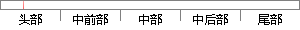

小程序是微信2017年1月9日正式上线的一个划时代产品。
片段位置图

相似结果|
1
原句片段：小程序是微信2017年1月9日正式上线的一个划时代产品。
相似片段 1：--小程序是什么?怎么玩? 2017年1月9日凌晨,微信小程序正式上线,号称一个划时代的产品。小程序是一种无需安装,即可使用的手机"应用"。微信小程序拥有四大特性...
相似片段 2：的目标就是把这10亿微信用户引导到入驻小程序的实体店铺去消费,给这10亿...小程序是微信2017年1月9日正式上线的一个划时代产品,前身是微信应用号。...
|
※ 片段修改建议 ※
近似词参考：- 程序：法式 步伐
- 产品：产物
系统自动生成语句：小法式是微信2017年1月9日正式上线的一个划时代产物。
注：本片段修改建议为系统自动生成，仅供参考。